Gallery
Hardware & Digital Systems Works
Below are photos, schematics, and code implementations from hardware engineering projects.
FPGA Logic Gate Implementation
Digital logic circuit designed using Verilog HDL and deployed on FPGA hardware.
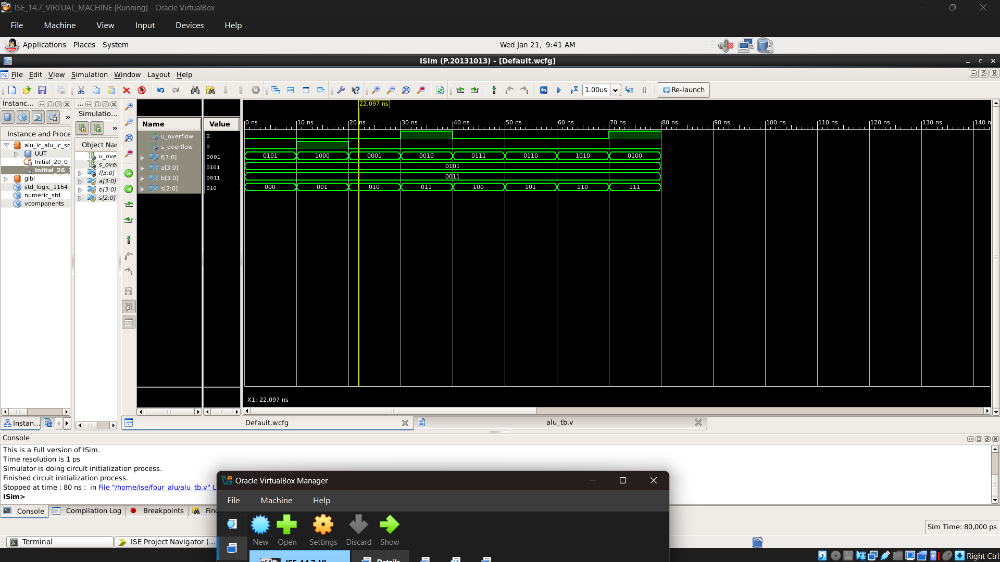
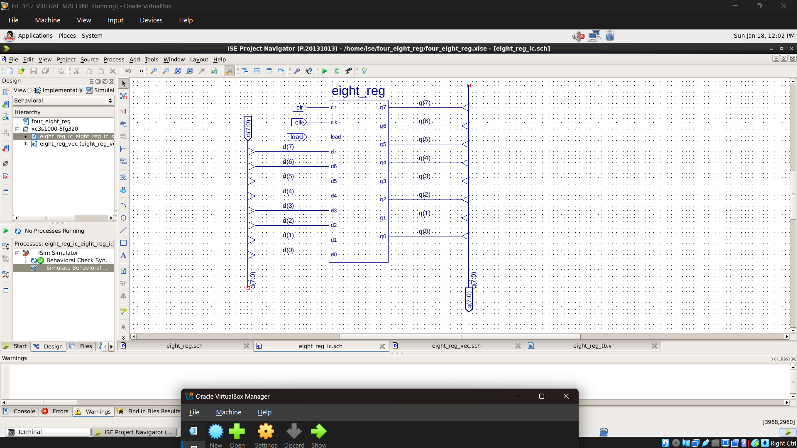
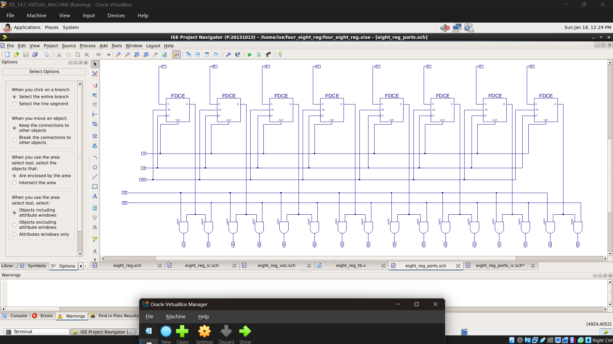

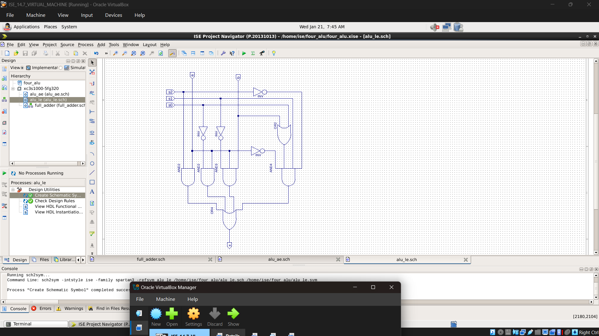
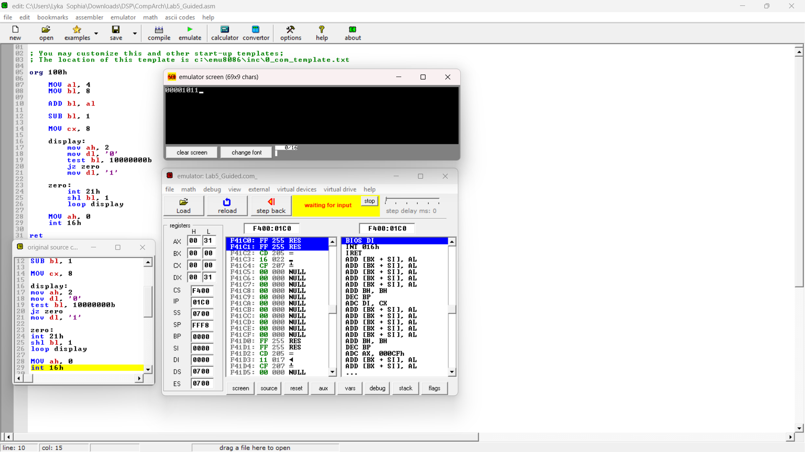
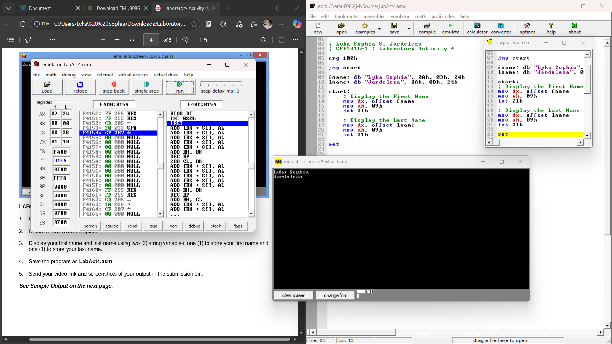
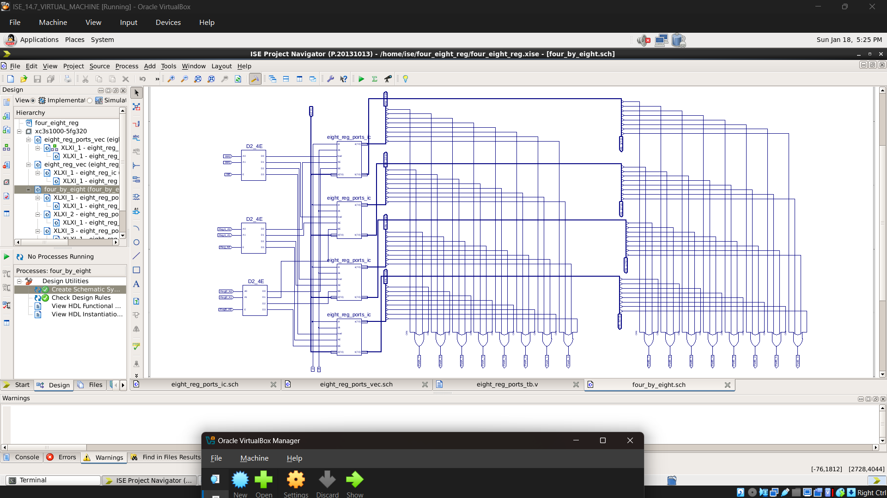
PCB & Schematic Layout
Circuit diagram and printed circuit board layout created using KiCad software.
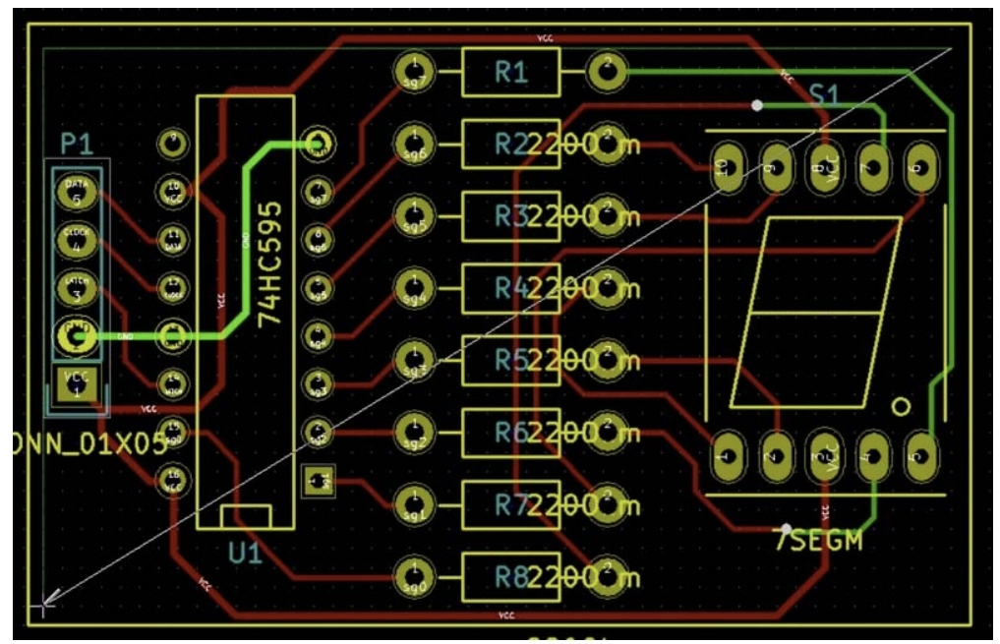
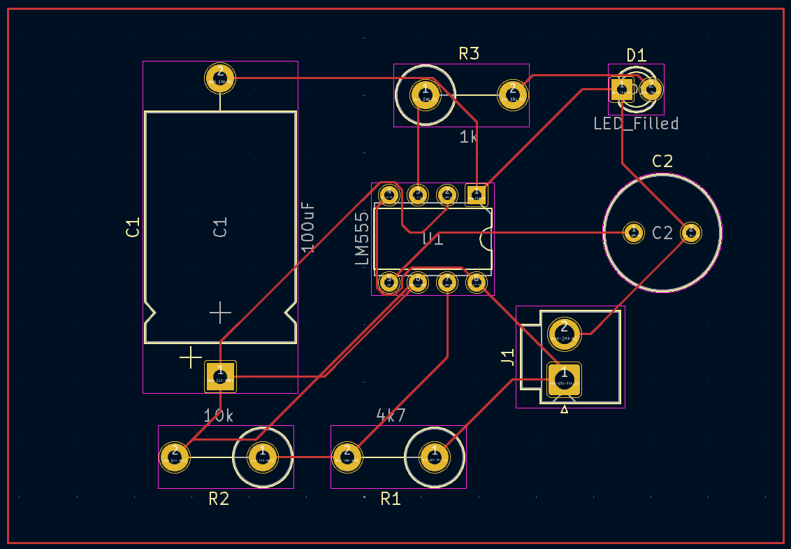
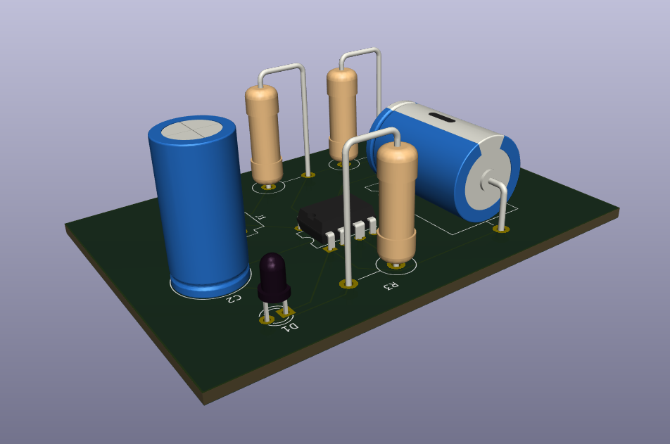
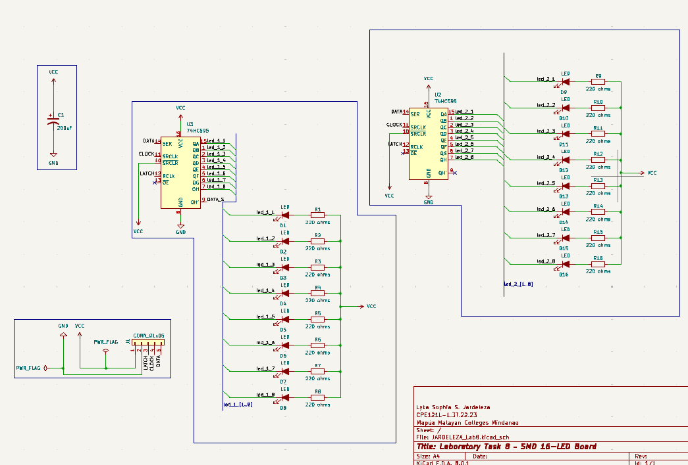
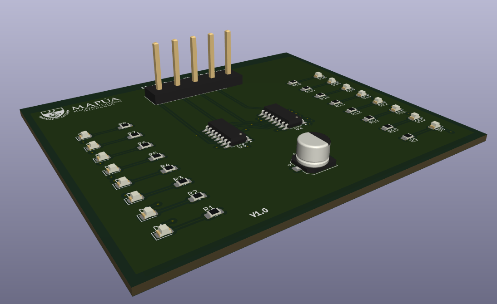
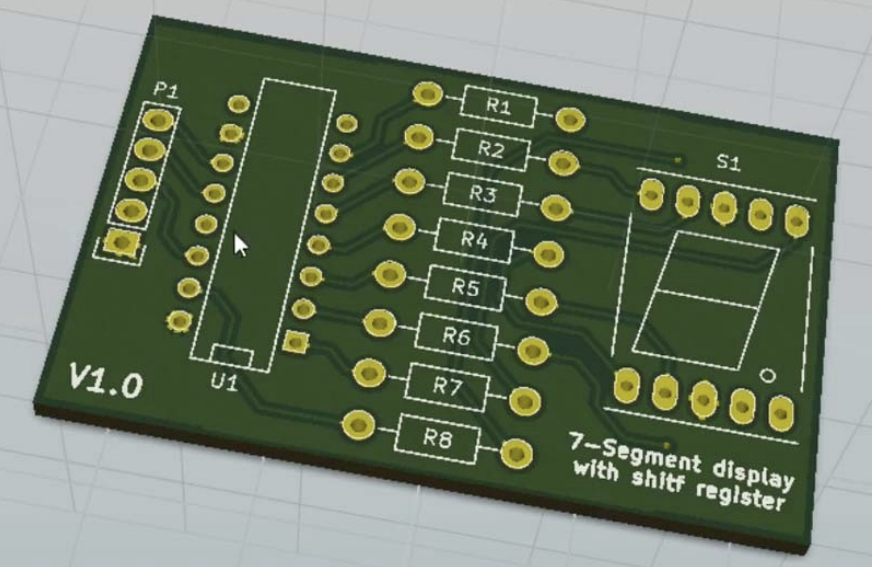
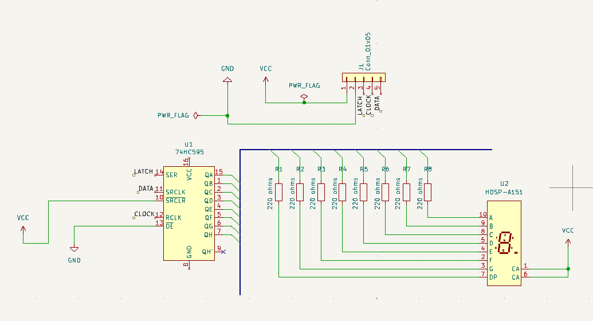
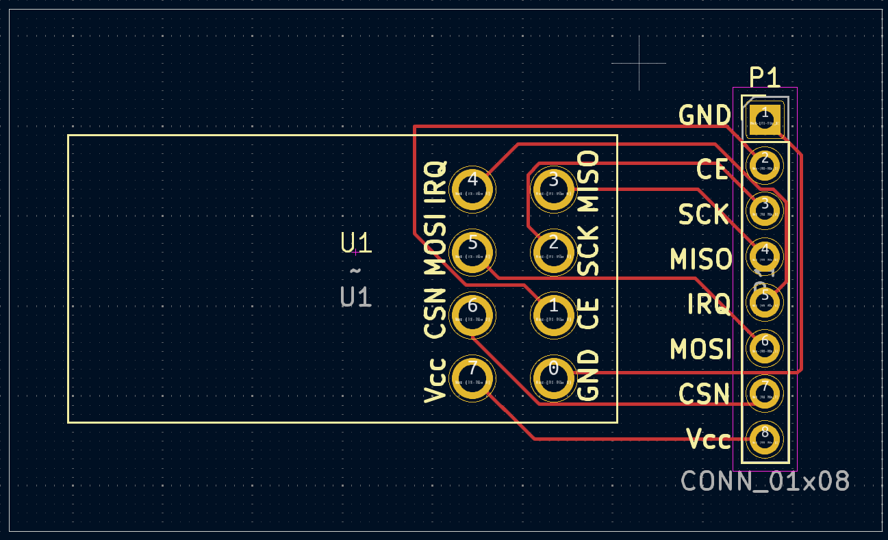
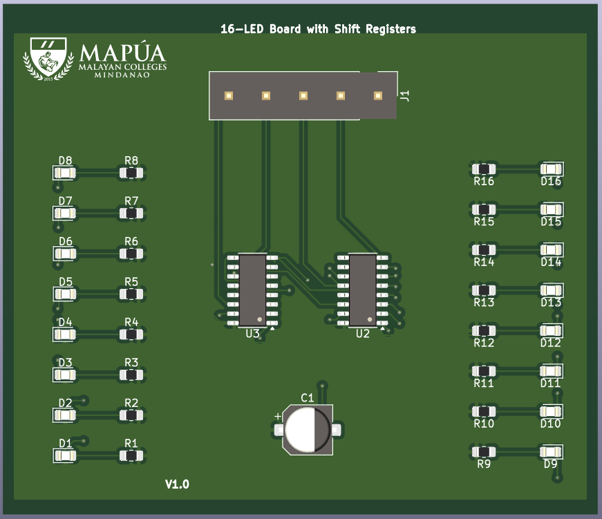